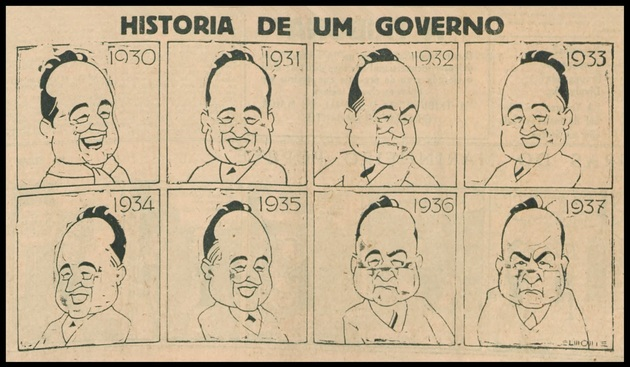
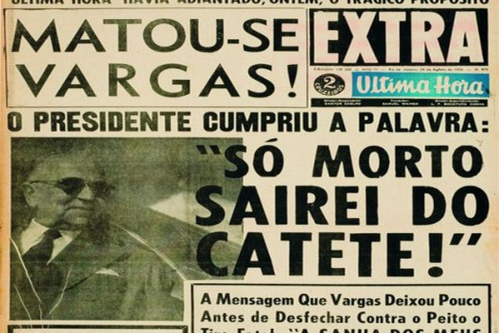

Era Vargas é o nome que se dá ao período em que Getúlio Vargas governou o Brasil por 15 anos, de forma contínua
(de 1930 a 1945). Esse período foi um marco na história brasileira, em razão das inúmeras alterações que Getúlio
Vargas fez no país, tanto sociais quanto econômicas.
A Era Vargas teve início com a Revolução de 1930, onde expulsou do poder a oligarquia cafeeira, dividindo-se em
três momentos:
• Governo Provisório -1930-1934
• Governo Constitucional – 1934-1937
• Estado Novo – 1937-1945
Até o ano de 1930 vigorava no Brasil a República Velha, conhecida hoje como o primeiro período republicano
brasileiro. Como característica principal centralizava o poder entre os partidos políticos e a conhecida
aliança política "café-com-leite" (entre São Paulo e Minas Gerais), a República Velha tinha como base a economia
cafeeira e, portanto, mantinha fortes vínculos com grandes proprietários de terras.
De acordo com as políticas do "café-com-leite", existia um revezamento entre os presidentes apoiados pelo Partido
Republicano Paulista (PRP), de São Paulo, e o Partido Republicano Mineiro (PRM), de Minas Gerais. Os presidentes
de um partido eram influenciados pelo outro partido, assim, dizia-se: nada mais conservador, que um liberal no
poder.
Em março de 1930, foram realizadas as eleições para presidente da República. Eleição esta que deu a vitória ao
candidato governista Júlio Prestes. Entretanto, Prestes não tomou posse. A Aliança Liberal (nome dado aos aliados
mineiros, gaúchos, e paraibanos) recusou-se a aceitar a validade das eleições, alegando que a vitória de Júlio
Prestes era decorrente de fraude.
Além disso, deputados eleitos em estados onde a Aliança Liberal conseguiu a vitória, não tiveram o reconhecimento
dos seus mandatos. Os estados aliados, principalmente o Rio Grande do Sul planejam então, uma revolta armada.
A situação acaba agravando-se ainda mais quando o candidato a vice-presidente de Getúlio Vargas, João Pessoa,
é assassinado em Recife, capital de Pernambuco.
Como os motivos dessa morte foram duvidosos, a propaganda getulista aproveitou-se disso para usá-la em seu favor,
atribuindo a culpa à oposição, além da crise econômica acentuada pela crise de 1929; a indignação, deste modo,
aumentou, e o Exército – que por sua vez era desfavorável ao governo vigente desde o tenentismo – começou a se
mobilizar e formou uma junta governamental composta por generais do Exército. No mês seguinte, em três de
novembro, Júlio Prestes foi deposto e fugiu junto com Washington Luís e o poder então foi passado para Getúlio
Vargas pondo fim à República Velha.
O Governo Provisório teve como objetivo reorganizar a vida política do país. Neste período, o presidente Getúlio
Vargas deu início ao processo de centralização do poder, eliminando os órgãos legislativos (federal, estadual e
municipal).
Diante da importância que os militares tiveram na estabilização da Revolução de 30, os primeiros anos da Era
Vargas foram marcados pela presença dos “tenentes” nos principais cargos do governo e por esta razão foram
designados representantes do governo para assumirem o controle dos estados, tal medida tinha como finalidade
anular a ação dos antigos coronéis e sua influência política regional.
Esta medida consolidou-se em clima de tensão entre as velhas oligarquias e os militares interventores.
A oposição às ambições centralizadoras de Vargas concentrou-se em São Paulo, onde as oligarquias locais, sob o
apelo da autonomia política e um discurso de conteúdo regionalista, convocaram o “povo paulistano” a lutar contra
o governo Getúlio Vargas, exigindo a realização de eleições para a elaboração de uma Assembleia Constituinte.
A partir desse movimento, teve origem a chamada Revolução Constitucionalista de 1932.
Mesmo derrotando as forças oposicionistas, o presidente convocou eleições para a Constituinte. No processo
eleitoral, devido o desgaste gerado pelos conflitos paulistas, as principais figuras militares do governo perderam
espaço político e, em 1934 uma nova constituição foi promulgada.
A Carta de 1934 deu maiores poderes ao poder executivo, adotou medidas democráticas e criou as bases da legislação
trabalhista. Além disso, sancionou o voto secreto e o voto feminino. Por meio dessa resolução e o apoio da maioria
do Congresso, Vargas garantiu mais um mandato.

As diferentes fases do governo Vargas segundo o cartunista Belmonte (Benedito Carneiro Bastos Barreto)
Getúlio Vargas e dona Darcy Vargas, em 1934
Nesse segundo mandato, conhecido como Governo Constitucional, a altercação política se deu em volta de dois ideais
primordiais: o fascista – conjunto de ideias e preceitos político-sociais totalitário introduzidos na Itália por
Mussolini –, defendido pela Ação Integralista Brasileira (AIB), e o democrático, representado pela Aliança Nacional
Libertadora (ANL), era favorável à reforma agrária, a luta contra o imperialismo e a revolução por meio da luta
de classes.
A ANL aproveitando-se desse espírito revolucionário e com as orientações dos altos escalões do comunismo soviético,
promoveu uma tentativa de golpe contra o governo de Getúlio Vargas. Em 1935, alguns comunistas brasileiros iniciaram
revoltas dentro de instituições militares nas cidades de Natal (RN), Rio de Janeiro (RJ) e Recife (PE).
Devido à falha de articulação e adesão de outros estados, a chamada Intentona Comunista, foi facilmente controlada
pelo governo.
Getúlio Vargas, no entanto, cultivava uma política de centralização do poder e, após a experiência frustrada de
golpe por parte da esquerda utilizou-se do episódio para declarar estado de sítio, com essa medida, Vargas,
perseguiu seus oponentes e desarticulou o movimento comunista brasileiro. Mediante a “ameaça comunista”, Getúlio
Vargas conseguiu anular a nova eleição presidencial que deveria acontecer em 1937. Anunciando outra calamitosa
tentativa de golpe comunista, conhecida como Plano Cohen, Getúlio Vargas anulou a constituição de 1934 e dissolveu
o Poder Legislativo. A partir daquele ano, Getúlio passou a governar com amplos poderes, inaugurando o chamado
Estado Novo.
Trabalhadores homenageiam Getúlio Vargas na Esplanada do Castelo, em 1940, no Rio de Janeiro
No dia 10 de novembro de 1937, era anunciado em cadeia de rádio pelo presidente Getúlio Vargas o Estado Novo.
Tinha início então, um período de ditadura na História do Brasil.
Sob o pretexto da existência de um plano comunista para a tomada do poder (Plano Cohen) Vargas fechou o Congresso
Nacional e impôs ao país uma nova Constituição, que ficaria conhecida depois como "Polaca" por ter sido inspirada
na Constituição da Polônia, de tendência fascista.
O Golpe de Getúlio Vargas foi organizado junto aos militares e teve o apoio de grande parcela da sociedade, uma vez
que desde o final de 1935 o governo reforçava sua propaganda anti comunista, alarmando a classe média, na verdade
preparando-a para apoiar a centralização política que desde então se desencadeava. A partir de novembro de 1937
Vargas impôs a censura aos meios de comunicação, reprimiu a atividade política, perseguiu e prendeu seus inimigos
políticos, adotou medidas econômicas nacionalizantes e deu continuidade a sua política trabalhista com a criação
da CLT (Consolidação das Leis do Trabalho), publicou o Código Penal e o Código de Processo Penal, todos em vigor
atualmente. Getúlio Vargas foi responsável também pelas concepções da Carteira de Trabalho, da Justiça do Trabalho,
do salário mínimo, e pelo descanso semanal remunerado.
Com a eclosão da Segunda Guerra Mundial, em 1939, o Brasil toma a decisão de manter-se neutro diante do conflito
europeu.
No entanto, no governo existiam aqueles que eram a favor de apoiar o Eixo e aqueles que pensam em apoiar os Aliados.
Devido à pressão americana, Getúlio Vargas decide declarar guerra à Alemanha e, posteriormente, mandar soldados para
Europa e ceder uma base aérea para os americanos.
Em troca, houve concessão de empréstimos e modernização do armamento do Exército brasileiro.
A contradição entre lutar contra uma ditadura e viver num regime sem democracia determinou o começo do fim da Era
Vargas.
Vários intelectuais, associações de estudantes e mesmo parte dos militares, começam a protestar abertamente contra o
regime varguista.
No dia 29 de outubro de 1945, Getúlio Vargas foi deposto por um golpe militar e pela U.DN. (União Democrática
Nacional), sendo conduzido ao desterro na sua cidade natal, São Borja/RS.

Manchete do jornal "A Última Hora" no dia seguinte a morte de Getúlio Vargas
Porém, em 1951, retornaria à Presidência concorrendo pelo Partido Trabalhista Brasileiro (PTB). Neste mandato,
alcançado pelo voto popular, lança as bases para criação da Petrobras.
Vargas suicidou-se no Palácio do Catete em 24 de agosto de 1954 com um tiro no peito. Sua carta-testamento explicava
os motivos de sua decisão com uma frase célebre: "Deixo a vida para entrar na História".